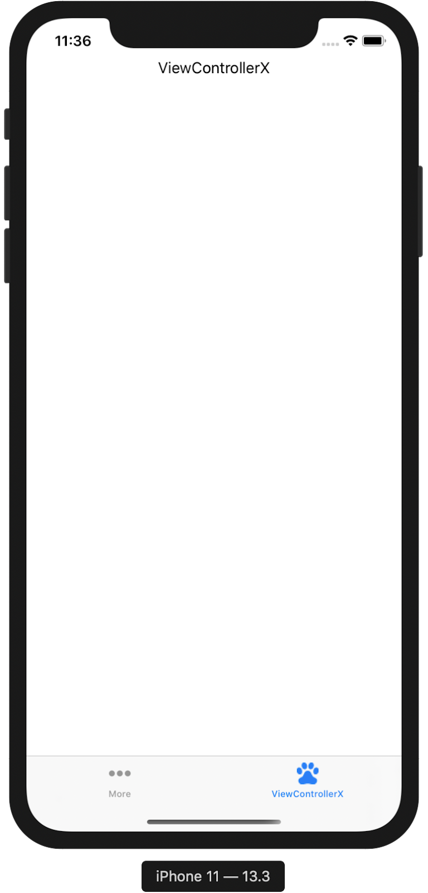
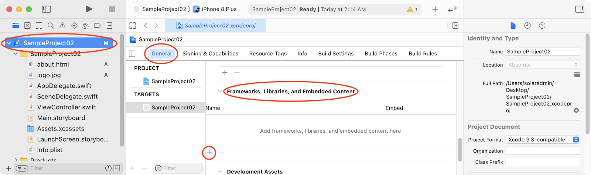
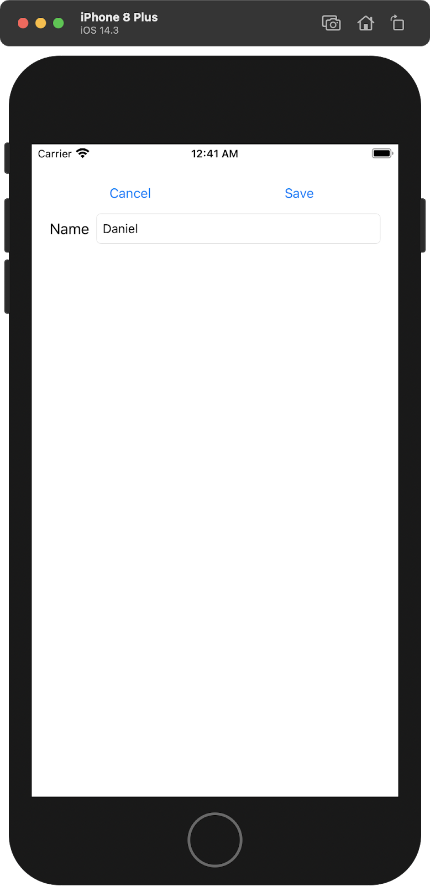

What you'll learn
- use a UITabBarController to manage a set of view controller objects
- customise the UITabBarItem object for a view controller
- use the viewWillAppear(_:) method to update user interface objects for a view controller
- define and use a class with the Singleton pattern
- use a WKWebView object to display HTML file
- create and use a tuple to store multiple pieces of data
- create and use a struct to store multiple pieces of data
What you'll need
- Mac running macOS Catalina
- Xcode 12
https://developer.apple.com/documentation/uikit/uitabbarcontroller
A UITabBarController object manages a set of view controllers, with each view controller represented by a tab bar item. Each view controller provides information about its tab bar item and supplies the view to be displayed when the item is selected. The figure below shows an example of a tab bar with 3 tabs; each tab has a title and an image.
In Main.storyboard, one or more selected view controller objects can be embedded in a UITabBarController via the Embed in button.

To add a view controller to an existing UITabBarController object, right-click-drag from the UITabBarController object to the view controller object to be added. In the dialog box which appears, select view controllers.
To customise the tab bar item, select the UITabBarItem belonging to the view controller, and use the attributes inspector to set the title and image.

- Create project SampleProject01
In Main.storyboard
- Add a label to ViewController with the text ViewController
- Select ViewController, then click the Embed In button and select Tab Bar Controller

- From the Document Outline, click on Tab Bar Item in the View Controller Scene
- From the Attributes Inspector, change the System Item type to More
- Run the project. ViewController is shown, and at the bottom of the screen is a tab bar with 1 item.
- Create
ViewControllerX : UIViewController
In Main.storyboard
- Add a view controller and use the Identity Inspector to set the class as ViewControllerX
- Add a label to ViewControllerX with the text ViewControllerX
- Right-click-drag from the tab bar controller to ViewControllerX, then in the dialog box which appears, select view controllers
- For the Tab Bar Item for ViewControllerX, set the System Item type to Favorites
- Run the project. ViewController is shown, and at the bottom of the screen is a tab bar with 2 items. Click on the second item in the tab bar. ViewControllerX is now shown. You can switch between the two view controllers via the tab bar.
- We will now customise the title and image for the tab bar item.
- Add the images from the resources/images folder from your learning package to Assets.xcassets.
- For the Tab Bar Item for ViewControllerX, set the System Item type to Custom, set the Title to ViewControllerX, set the Image to game
- Run the project. The tab bar item for ViewControllerX has been customised.

https://developer.apple.com/documentation/uikit/uiviewcontroller

Managing the View | viewDidLoad() | Called after the controller's view is loaded into memory. |
Responding to View Events | viewWillAppear(Bool) | Notifies the view controller that its view is about to be added to a view hierarchy. |
The viewDidLoad() method is called only once when the controller's view is loaded into memory. We have been adding code to that method to initialise variables or update the user interface objects belonging to that view controller.
View controller objects have another method called viewWillAppear(_:). The viewWillAppear(_:) method is called every time the view is about to appear. When view controller objects are managed by a UITabBarController:
- code to update the user interface objects should be added to
viewWillAppear(_:)instead ofviewDidLoad() - code for initialisation of properties should be in
viewDidLoad()orviewWillAppear(_:)depending on the requirements of the application.
- Continue with SampleProject01
- Modify ViewController to add the
viewWillAppear(_:)method and add some debug statements.
import UIKit
class ViewController: UIViewController {
override func viewDidLoad() {
super.viewDidLoad()
print(#file, #function)
}
override func viewWillAppear(_ animated: Bool) {
print(#file, #function)
}
}- Modify ViewControllerX to add the
viewWillAppear(_:)method and add some debug statements.
import UIKit
class ViewControllerX: UIViewController {
override func viewDidLoad() {
super.viewDidLoad()
print(#file, #function)
}
override func viewWillAppear(_ animated: Bool) {
print(#file, #function)
}
}- Run the project. Switch between the 2 view controllers. Note that
viewDidLoad()is only called once when the view is first loaded whereasviewWillAppear(_:)is called every time the view for that controller appears on the screen. Sample debug output is shown below for the following scenario:
- Run the project (viewDidLoad and viewWillAppear are called on ViewController)
- Click on the second tab (viewDidLoad and viewWillAppear are called on ViewControllerX)
- Click on the first tab (viewWillAppear is called on ViewController)
- Click on the second tab (viewWillAppear is called on ViewControllerX)
/Users/solaradmin/Desktop/SampleProject01/SampleProject01/ViewController.swift viewDidLoad() /Users/solaradmin/Desktop/SampleProject01/SampleProject01/ViewController.swift viewWillAppear(_:) /Users/solaradmin/Desktop/SampleProject01/SampleProject01/ViewControllerX.swift viewDidLoad() /Users/solaradmin/Desktop/SampleProject01/SampleProject01/ViewControllerX.swift viewWillAppear(_:) /Users/solaradmin/Desktop/SampleProject01/SampleProject01/ViewController.swift viewWillAppear(_:) /Users/solaradmin/Desktop/SampleProject01/SampleProject01/ViewControllerX.swift viewWillAppear(_:)
To use the singleton pattern to ensure that only one instance of a class exists during the lifetime of the application:
- Initialise a static instance of the class (this will be the only instance of that class) inside the class
- Make the initializer private (this prevents creation of other instances of that class)
class SingletonClass {
// Initialise a static instance of the class (this will be the
// only instance of that class) inside the class
static var sharedInstance = SingletonClass()
// Make the initializer private (this prevents creation of other
// instances of that class)
private init() {
}
}The singleton pattern can be used in the DataController class to ensure that the entire application uses the same DataController instance; in such a case, there is no requirement to pass the DataController from one view controller to another - the view controllers simply need to get the singleton DataController as shown below.
class DataController {
// Initialise a static instance of the class (this will be the
// only instance of that class) inside the class
static var sharedInstance = DataController()
// Make the initializer private (this prevents creation of other
// instances of that class)
private init() {
}
// remaining DataController code is not shown
}import UIKit
class ViewControllerX: UIViewController {
let dc = DataController.sharedInstance
override func viewDidLoad() {
super.viewDidLoad()
}
}import UIKit
class ViewControllerY: UIViewController {
let dc = DataController.sharedInstance
override func viewDidLoad() {
super.viewDidLoad()
}
}- Continue with SampleProject01
- Create a DataController class with the code shown below
class DataController {
// Initialise a static instance of the class (this will be the
// only instance of that class) inside the class
static var sharedInstance = DataController()
// Make the initializer private (this prevents creation of other
// instances of that class)
private init() {
}
private var items : [String] = []
var count : Int {
return items.count
}
func add(item:String) {
items.append(item)
}
func retrieve(index:Int) -> String {
if (index < count) {
return items[index]
}
return ""
}
}- In Main.storyboard, for ViewController, add a text field (
IBOutletoutTextField) and a button (IBActionactAdd,titleAdd). - Declare a property for the DataController object.
- In
actAdd, dismiss the keyboard and add the text from the keyboard to the DataController.
import UIKit
class ViewController: UIViewController {
@IBOutlet weak var outTextField: UITextField!
let dc = DataController.sharedInstance
override func viewDidLoad() {
super.viewDidLoad()
print(#file, #function)
}
override func viewWillAppear(_ animated: Bool) {
print(#file, #function)
}
@IBAction func actAdd(_ sender: UIButton) {
outTextField.resignFirstResponder()
dc.add(item: outTextField.text!)
}
}- In ViewControllerX, add an
IBOutletoutLabel for the label. - Declare a property for the DataController object.
- In the
viewWillAppearmethod, display the last item from the DataController in the label.
import UIKit
class ViewControllerX: UIViewController {
@IBOutlet weak var outLabel: UILabel!
let dc = DataController.sharedInstance
override func viewDidLoad() {
super.viewDidLoad()
print(#file, #function)
}
override func viewWillAppear(_ animated: Bool) {
print(#file, #function)
let count = dc.count
if (count > 0) {
outLabel.text = dc.retrieve(index: count-1)
}
}
}- Run the application. Enter text in the text field and press Add. Switch over to ViewControllerX and the last text saved to the DataController is displayed in the label. Repeat a few times to verify that is the case.
https://developer.apple.com/documentation/webkit/wkwebview
- Need to add WebKit.framework to the project.
- Need to add an
import WebKitstatement in the view controller file
Sample code to load a HTML file which exists in the project
import UIKit
import WebKit
class ViewController: UIViewController {
@IBOutlet weak var outWebView: WKWebView!
override func viewDidLoad() {
super.viewDidLoad()
if let filePath = Bundle.main.url(forResource: "about",
withExtension: "html") {
let myRequest = URLRequest(url: filePath)
outWebView.load(myRequest)
}
}
}- Create project SampleProject02
- Add the 2 files (about.html and logo.jpg) from the resources/html folder from your learning package to your project. Drag and drop the files into the Project Navigator; check the Copy items if needed checkbox.
- In the Project Navigator, select SampleProject02.xcodeproj (the first file in the list), then in the editor window, select General and scroll down to Frameworks, Libraries and Embedded Content
- Click on the + button

- In the dialog which appears, search for WebKit.framework, select WebKit.framework, click Add
- In Main.storyboard, add a WebKit View to ViewController.
- Stretch the WebKit View to fit the top, left, bottom and right guides.
- Create an
IBOutletfor the WebKit View as outWebView - Modify ViewController
import UIKit
import WebKit
class ViewController: UIViewController {
@IBOutlet weak var outWebView: WKWebView!
override func viewDidLoad() {
super.viewDidLoad()
if let filePath = Bundle.main.url(forResource: "about",
withExtension: "html") {
let myRequest = URLRequest(url: filePath)
outWebView.load(myRequest)
}
}
}- Run the project. Content of about.html is loaded in the WKWebView in ViewController
https://docs.swift.org/swift-book/ReferenceManual/Types.html
A tuple type is a comma-separated list of types, enclosed in parentheses.
let result = (4.0, "A")A tuple groups multiple values into a single compound value. You can create a tuple from any permutation of types, and they can contain as many different types as you like; for example:
let tupleVar1 = (53, 59, 61) // (Int, Int, Int)
let tupleVar2 = ("Rich", true) // (String, Bool)Tuple definition with unnamed individual elements; access elements via index.
let resultX = (4.0, "A")
print("resultX The gpa is \(resultX.0)") // prints "The gpa is 4.0"
print("resultX The grade is \(resultX.1)") // prints "The grade is A"Tuple definition with named individual elements; access elements via index or name.
let resultY = (gpa:4.0, grade:"A")
print("resultY The gpa is \(resultY.0)") // prints "The gpa is 4.0"
print("resultY The gpa is \(resultY.gpa)") // prints "The gpa is 4.0"
print("resultY The grade is \(resultY.1)") // prints "The grade is A"
print("resultY The grade is \(resultY.grade)") // prints "The grade is A"Decomposing a tuple's contents into separate constants or variables:
let resultZ = (4.0, "A")
let (gpa, grade) = resultZ
print("resultZ The gpa is \(gpa)") // prints "The gpa is 4.0"
print("resultZ The grade is \(grade)") // prints "The grade is A"
let (gpaOnly, _) = resultZ
print("resultZ The gpa is \(gpaOnly)") // prints "The gpa is 4.0"When decomposing a tuple, use an underscore for the values that do not need to be retrieved into separate constants or variables.
Typically, a function is only able to return a single value. By returning a tuple, a function is able to return multiple values.
The example below shows the syntax for defining a function which returns a tuple.
func getGrade() -> (gpa:Double, grade:String) {
return (2.0, "C")
}- Create project SampleProject03
- Modify ViewController
import UIKit
class ViewController: UIViewController {
override func viewDidLoad() {
super.viewDidLoad()
let resultX = (4.0, "A")
print("resultX The gpa is \(resultX.0)") // prints "The gpa is 4.0"
print("resultX The grade is \(resultX.1)") // prints "The grade is A"
let resultY = (gpa: 4.0, grade: "A")
print("resultY The gpa is \(resultY.0)") // prints "The gpa is 4.0"
print("resultY The gpa is \(resultY.gpa)") // prints "The gpa is 4.0"
print("resultY The grade is \(resultY.1)") // prints "The grade is A"
print("resultY The grade is \(resultY.grade)") // prints "The grade is A"
let resultZ = (gpa: 4.0, grade: "A")
let (gpa, grade) = resultZ
print("resultZ The gpa is \(gpa)") // prints "The gpa is 4.0"
print("resultZ The grade is \(grade)") // prints "The grade is A"
let (gpaOnly, _) = resultZ
print("resultZ The gpa is \(gpaOnly)") // prints "The gpa is 4.0"
}
}- Run the application and investigate the output.
- Modify ViewController. This example shows the syntax for writing a function which returns a tuple.
import UIKit
class ViewController: UIViewController {
override func viewDidLoad() {
super.viewDidLoad()
let resultX = getGrade()
print("resultX The gpa is \(resultX.0)") // prints "The gpa is 4.0"
print("resultX The grade is \(resultX.1)") // prints "The grade is A"
let resultY = getGrade()
print("resultY The gpa is \(resultY.0)") // prints "The gpa is 4.0"
print("resultY The gpa is \(resultY.gpa)") // prints "The gpa is 4.0"
print("resultY The grade is \(resultY.1)") // prints "The grade is A"
print("resultY The grade is \(resultY.grade)") // prints "The grade is A"
let resultZ = getGrade()
let (gpa, grade) = resultZ
print("resultZ The gpa is \(gpa)") // prints "The gpa is 4.0"
print("resultZ The grade is \(grade)") // prints "The grade is A"
let (gpaOnly, _) = resultZ
print("resultZ The gpa is \(gpaOnly)") // prints "The gpa is 4.0"
}
func getGrade() -> (gpa:Double, grade:String) {
return (4.0, "A")
}
}- Run the application and investigate the output.
https://docs.swift.org/swift-book/LanguageGuide/ClassesAndStructures.html
Structures are very similar to classes in that it also has properties, methods and initialisers.
struct Car {
var speed = 50.0
init(speed:Double) {
self.speed = speed
}
var isStationary : Bool {
if (speed == 0) {
return true
}
return false
}
func printSpeed() {
print(speed)
}
}The key difference is that structures are value types whereas classes are reference types. The meaning of this is illustrated by the sample code shown below:
struct StructExample {
var value = 0.0
init(value:Double) {
self.value = value
}
}
class ClassExample {
var value = 0.0
init(value:Double) {
self.value = value
}
}
// ===============================================================
// classes are reference types
var classExample1 = ClassExample(value: 1.0)
// classExample1 and classExample2 reference the same instance
var classExample2 = classExample1
print("classExample1.value is \(classExample1.value)")
print("classExample2.value is \(classExample2.value)")
// classExample1.value is 1.0
// classExample2.value is 1.0
classExample2.value = 2.0
print("classExample1.value is \(classExample1.value)")
print("classExample2.value is \(classExample2.value)")
// classExample1.value is 2.0
// classExample2.value is 2.0
// classExample2.value = 2.0 sets the value of the instance to 2.0
// reading the value via classExample1 is the same as
// reading the value via classExample2
// ===============================================================
// structs are value types
var structExample1 = StructExample(value: 1.0)
// the values from the instance in structExample1 are copied
// to a new instance in structExample2
var structExample2 = structExample1
print("structExample1.value is \(structExample1.value)")
print("structExample2.value is \(structExample2.value)")
// structExample1.value is 1.0
// structExample2.value is 1.0
structExample2.value = 2.0
print("structExample1.value is \(structExample1.value)")
print("structExample2.value is \(structExample2.value)")
// structExample1.value is 1.0
// structExample2.value is 2.0
// structExample2.value = 2.0 sets the value of the instance to 2.0
// structExample1 has no relationship to structExample2
// they are two different instancesFor this module, just be aware of the existence of structs, and that structs are value types whereas classes are reference types.
Read the documentation for more information about structs.
- Create SampleProject04
- Create a swift file for
StructExampleand add the following code:
struct StructExample {
var value = 0.0
init(value:Double) {
self.value = value
}
}- Create a swift file for
ClassExampleand add the following code:
class ClassExample {
var value = 0.0
init(value:Double) {
self.value = value
}
}- Modify ViewController
import UIKit
class ViewController: UIViewController {
override func viewDidLoad() {
super.viewDidLoad()
// ===============================================================
// classes are reference types
var classExample1 = ClassExample(value: 1.0)
// classExample1 and classExample2 reference the same instance
var classExample2 = classExample1
print("classExample1.value is \(classExample1.value)")
print("classExample2.value is \(classExample2.value)")
// classExample1.value is 1.0
// classExample2.value is 1.0
classExample2.value = 2.0
print("classExample1.value is \(classExample1.value)")
print("classExample2.value is \(classExample2.value)")
// classExample1.value is 2.0
// classExample2.value is 2.0
// classExample2.value = 2.0 sets the value of the instance to 2.0
// reading the value via classExample1 is the same as
// reading the value via classExample2
// ===============================================================
// structs are value types
var structExample1 = StructExample(value: 1.0)
// the values from the instance in structExample1 are copied
// to a new instance in structExample2
var structExample2 = structExample1
print("structExample1.value is \(structExample1.value)")
print("structExample2.value is \(structExample2.value)")
// structExample1.value is 1.0
// structExample2.value is 1.0
structExample2.value = 2.0
print("structExample1.value is \(structExample1.value)")
print("structExample2.value is \(structExample2.value)")
// structExample1.value is 1.0
// structExample2.value is 2.0
// structExample2.value = 2.0 sets the value of the instance to 2.0
// structExample1 has no relationship to structExample2
// they are two different instances
}
}- Run the project. Analyse the code and observe the output.
classExample1.value is 1.0 classExample2.value is 1.0 classExample1.value is 2.0 classExample2.value is 2.0 structExample1.value is 1.0 structExample2.value is 1.0 structExample1.value is 1.0 structExample2.value is 2.0
The code below shows how to generate a random number between a specified range.
// generates a random number between 0 (inclusive) and 10 (inclusive)
var random1 = Int.random(in: 0...10)
print(random1)
// generates a random number between 10 (inclusive) and 20 (inclusive)
var random2 = Int.random(in: 10...20)
print(random2)- Create project SampleProject05
- Modify ViewController.
import UIKit
class ViewController: UIViewController {
override func viewDidLoad() {
super.viewDidLoad()
// Do any additional setup after loading the view.
// generates a random number between 0 (inclusive) and 10 (inclusive)
var random1 = Int.random(in: 0...10)
print(random1)
// generates a random number between 10 (inclusive) and 20 (inclusive)
var random2 = Int.random(in: 10...20)
print(random2)
}
}- Run the project several times and observe the output.
Create an app with the following software requirements:
The application has one view controller as shown below.
- ViewController displays a list of names in a UIPickerView; the list of names are stored in a DataController which uses the singleton pattern
- ViewController has a Select Random Name button which will cause the UIPickerView to scroll to a random name in the UIPickerView
Create an app with the following software requirements:
The application has three view controllers as shown below.
- ViewController and AddViewController are in a UITabBarController
- ViewController displays a list of names in a UIPickerView (Screenshot 1); the list of names are stored in a DataController
- ViewController has an Edit button which has a modal segue to EditViewController; the name which is currently selected in the UIPickerView will be edited in EditViewController
- EditViewController (Screenshot 2) has a Cancel and Save button; pressing Save saves the edited value to the DataController and returns to ViewController; pressing Cancel does not save the edited value to the DataController and returns to ViewController
- AddViewController (Screenshot 3) has a Cancel and Save button; pressing Save saves the new value to the DataController and clears the text field; pressing Cancel does not save the new value to the DataController and clears the text field
Screenshot 1 - ViewController shows a list of names
Screenshot 2 - EditViewController edits the selected name in ViewController

Screenshot 3 - AddViewController allows adding values to DataController
- UITableViewController
Reference docs
- https://developer.apple.com/documentation/uikit/uitabbarcontroller
- https://developer.apple.com/documentation/uikit/uiviewcontroller
- https://developer.apple.com/library/archive/referencelibrary/GettingStarted/DevelopiOSAppsSwift/WorkWithViewControllers.html
- https://developer.apple.com/documentation/webkit/wkwebview
- https://docs.swift.org/swift-book/ReferenceManual/Types.html
- https://docs.swift.org/swift-book/LanguageGuide/ClassesAndStructures.html